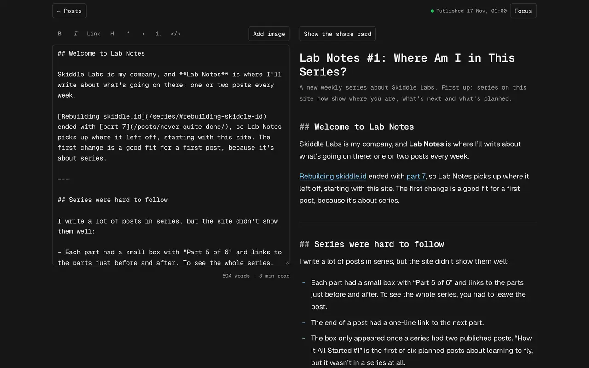

Lab Notes · part 2 of 2, ongoing
- Part 1Where Am I in This Series?
- Part 2The Whole Site Lives in My Repo Nowyou're here
On this page · 8 sections
v4.0 is out
Lab Notes #1 was about one feature. This one is about a whole version, so it's long.
v4.0 is out, and everything this site shows now comes from records in my own AT Protocol repo:
- posts and series, and the drafts I'm still writing
- the pages: CV, services, uses, about and projects
- the post categories
- the status line on the home page
- the music I play
The GitHub repo only holds code now. There's no database of my own, and I edit all of it from an admin app on my phone or laptop, signed in with my Bluesky account.
From copy to source
Every Bluesky account has a repo: a small database of records on your PDS (personal data server). In Publishing My Blog to AT Protocol I started putting copies of my posts there, so Standard.site readers could find them.
v4 flips that around. The records aren't copies anymore, they're the only source. The site looks up my PDS from my DID on every read, so if I move to my own PDS one day, the site follows without a change.
Posts, without git
Each post is still a site.standard.document, so Leaflet, pckt and other readers keep finding it. Inside it is my own id.skiddle.post: the Markdown, the images as blobs, the category, the language and the series part. Series and drafts have records of their own.
The site used to be plain static files, built from Markdown in git. Now a page is rendered when someone asks for it, straight from the records, and Cloudflare caches it: fresh for a minute, then served while a new copy renders, for up to a day.
An admin app, signed in with Bluesky
The admin app lives at /admin/. I sign in with Bluesky, and Bluesky's own page lists what the app may change. It can't edit or delete anything else. It also installs as an app on my phone.

Drafts save as I type, a second and a half after I stop. They're records, so a draft I start on the laptop is on my phone a moment later.
The pages too
The CV, services, uses, about and projects pages each got a lexicon and a record. Their editors aren't hand-made: each one is built from its lexicon, one field per property.
The switch
I wrote every step of the switch down before doing it, with who does what.
Music, from my repo
The “now playing” card and the music card used to come from Last.fm's API. Now they come from teal.fm, which keeps every play as a record in my repo. A tiny second Worker runs Deezer's search near Singapore. Its first log line on the live site:
search "…": 2 results (SIN, Deezer SG (open))Still on the free plan
All of this runs on Cloudflare's free plan, now with three Workers: the site, the scheduler and the covers.
(The rest of the post continues here in the real page.)
Comments
reply on Bluesky ↗Replies to the post's announcement on Bluesky show here, with its likes and reposts.